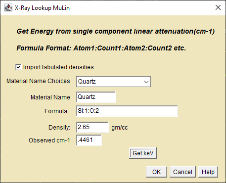
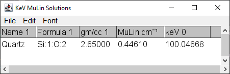

This plugin provides a non-modal dialog that allows the user to look up the X-ray energy that will produce an experimentally observed cross-section for atoms and compounds while working with other images.

X-ray Lookup MuLin Dialog.
Import tabulated densities - Uncheck to ignore tabulated densities.
Material Name Choices - A pull down list of materials. Click to select or double-click and type a character to clip the list to names to those that begin with that character.
Material Name - Auto-populated from the list choice. Edit to change the name.
Formula - Auto-populated from the list choice. Edit to change the formula.
Density - Auto-populated from the list choice. Edit to change the density.
Observed cm-1 - Enter the linear attenuation from a material in your CT slice.
Get keV - Click to get the X-ray energie(s) without exiting.
OK - Click to get the X-ray energie(s) and exit.

X-ray Lookup MuLin Results.
X-ray Lookup MuLin Summary
It is not reliable above 500keV.
It may return more than one energy if the material contains absorption edges.
Some of the energy solutions are easily eliminated if they are outside the x-ray source's operational range.
It gives the correct X-ray energy from the input linear attenuation of a known material provided that the reconstruction algorithm used to produce the CT slice is quantitative.
Solutions near absorption edge energies should be treated with caution since near-edge attenuation can be sensitive to an atom's chemical environment.
To test the confidence of the reported energies, check the solutions returned at the standard deviations of the image data.